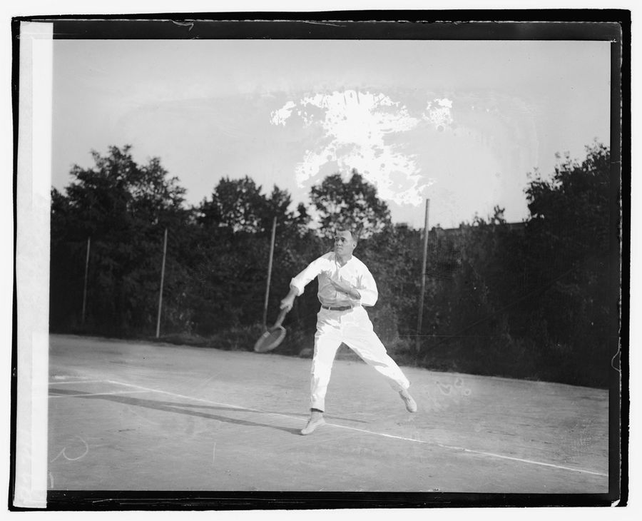
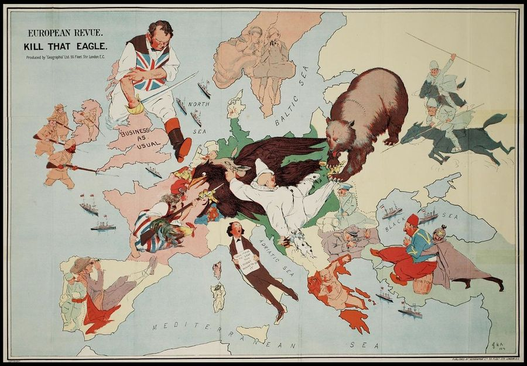

プーチン氏、新型原子力潜水艦を披露Putin visade upp ny atomubåtロシアのウラジーミル・プーチン大統領は金曜日、同国の新しい…の進水式に参加した
プーチン氏、新型原子力潜水艦を披露Putin visade upp ny atomubåtロシアのウラジーミル・プーチン大統領は金曜日、同国の新しい…の進水式に参加した SVTの専門家が称賛「スウェーデンのニコラ・ヨキッチ」Hyllas av SVT-experten: ”Sveriges Nikola Jokić”スウェーデン版ニコラ・ヨキッチは誰か。SVTの専門家ニック・ラヤチッチ氏によれば、その名はシモン・ビルガンデルだ。「その比較は気に入っている」とビルガンデル氏は語る。
SVTの専門家が称賛「スウェーデンのニコラ・ヨキッチ」Hyllas av SVT-experten: ”Sveriges Nikola Jokić”スウェーデン版ニコラ・ヨキッチは誰か。SVTの専門家ニック・ラヤチッチ氏によれば、その名はシモン・ビルガンデルだ。「その比較は気に入っている」とビルガンデル氏は語る。 スウェーデン、W杯予選でハンガリーとの必勝試合に勝利Sverige vann måstematchen mot Ungern i VM-kvaletW杯の夢はまだ生きている。スウェーデンはまさに手に汗握る展開の末、ハンガリーとの必勝試合に勝った。トビアス・ボルグが終了間際に2本の3点シュートを決めて決着をつけた。「私はとても…
スウェーデン、W杯予選でハンガリーとの必勝試合に勝利Sverige vann måstematchen mot Ungern i VM-kvaletW杯の夢はまだ生きている。スウェーデンはまさに手に汗握る展開の末、ハンガリーとの必勝試合に勝った。トビアス・ボルグが終了間際に2本の3点シュートを決めて決着をつけた。「私はとても… 複数の議員がタンド・リングクビスト氏に逆らう意向Flera ledamöter tänker trotsa Thand Ringqvist最後の最後まで、政権樹立がどう決着するかは不透明だ。日曜日には中央党の信任評議会が開かれ、エコットの聞き取り調査では、複数の議員が
複数の議員がタンド・リングクビスト氏に逆らう意向Flera ledamöter tänker trotsa Thand Ringqvist最後の最後まで、政権樹立がどう決着するかは不透明だ。日曜日には中央党の信任評議会が開かれ、エコットの聞き取り調査では、複数の議員が ブリュネース、SDHLで11連勝の後に初黒星Första förlusten för Brynäs i SDHL efter elva rakaブリュネースの連勝が止まった。フレルンダ戦で、11試合連続の勝ち点3の後、今シーズン初の敗戦を喫した。「フレルンダは良いチームで、彼らはそれを…」
ブリュネース、SDHLで11連勝の後に初黒星Första förlusten för Brynäs i SDHL efter elva rakaブリュネースの連勝が止まった。フレルンダ戦で、11試合連続の勝ち点3の後、今シーズン初の敗戦を喫した。「フレルンダは良いチームで、彼らはそれを…」 燃料に対する一時的な減税がなくなるTillfälliga skattesänkningen på drivmedel försvinner火曜日、ガソリンとディーゼルに対する最後の一時的な減税が終了する。この減税は、イラン戦争によって生じ得る値上げを抑えるため、7月1日に導入された
燃料に対する一時的な減税がなくなるTillfälliga skattesänkningen på drivmedel försvinner火曜日、ガソリンとディーゼルに対する最後の一時的な減税が終了する。この減税は、イラン戦争によって生じ得る値上げを抑えるため、7月1日に導入された 14失点後のエズビン：「ただのクソでしかない」Edsbyn efter 14 insläppta: ”Bara piss och skit”アリーナの外にはスノーモービルが並んでいた。アリーナの中では、ヴィラ・リードシェーピングが突き放して、SMの再戦となった首位対決でエズビンを14対3と粉砕して勝利した
14失点後のエズビン：「ただのクソでしかない」Edsbyn efter 14 insläppta: ”Bara piss och skit”アリーナの外にはスノーモービルが並んでいた。アリーナの中では、ヴィラ・リードシェーピングが突き放して、SMの再戦となった首位対決でエズビンを14対3と粉砕して勝利した 自治体での怒り――クリスマスツリーが「見つからない」Ilskan i kommunen – ”hittar” ingen julgranレナーテは失望：「とても残念です」
自治体での怒り――クリスマスツリーが「見つからない」Ilskan i kommunen – ”hittar” ingen julgranレナーテは失望：「とても残念です」 ワールドカップ予選の試合にアンドレアス・アルムグレンが姿を見せるHär dyker Andreas Almgren upp på VM-kvalmatchenバスケットボール・ワールドカップの出場権をかけてスウェーデンがハンガリーと対戦する会場には、著名人の姿も多く見られる。その1人がランニングのスター、アンドレアス・アルムグレンで、彼は観客から称賛を受けた
ワールドカップ予選の試合にアンドレアス・アルムグレンが姿を見せるHär dyker Andreas Almgren upp på VM-kvalmatchenバスケットボール・ワールドカップの出場権をかけてスウェーデンがハンガリーと対戦する会場には、著名人の姿も多く見られる。その1人がランニングのスター、アンドレアス・アルムグレンで、彼は観客から称賛を受けた 殺人容疑者、ゾウに止められるMisstänkt mördare stoppad – av elefantスリランカ北部の殺人容疑者は、原付バイクで犯行現場から逃走し、逃げ切るかに見えた。
殺人容疑者、ゾウに止められるMisstänkt mördare stoppad – av elefantスリランカ北部の殺人容疑者は、原付バイクで犯行現場から逃走し、逃げ切るかに見えた。 ドイツ警察、スウェーデンのシナゴーグに対するテロ計画を疑うTysk polis misstänker terrorplaner mot synagoga i Sverigeドイツ警察は、親イランのテロ組織とつながりのある人物たちが、スウェーデンのシナゴーグへの攻撃を計画していたと疑っていると、DNが情報源を引用して報じた…
ドイツ警察、スウェーデンのシナゴーグに対するテロ計画を疑うTysk polis misstänker terrorplaner mot synagoga i Sverigeドイツ警察は、親イランのテロ組織とつながりのある人物たちが、スウェーデンのシナゴーグへの攻撃を計画していたと疑っていると、DNが情報源を引用して報じた… 米国：オマーン湾で船舶を攻撃USA: Attackerat fartyg i Omanbukten米軍がオマーン湾で貨物船を攻撃し、無力化したと軍司令部が発表した…
米国：オマーン湾で船舶を攻撃USA: Attackerat fartyg i Omanbukten米軍がオマーン湾で貨物船を攻撃し、無力化したと軍司令部が発表した… イェスペル・サンケル、陰嚢つかみで3試合の出場停止Jesper Sankell stängs av i tre matcher efter punggreppetイェスペル・サンケルは対戦相手の陰嚢をつかんだことで処分を受ける。ベクショーの選手は3試合の出場停止となる。「その行為には競技上の目的がなく、向けられたのは…
イェスペル・サンケル、陰嚢つかみで3試合の出場停止Jesper Sankell stängs av i tre matcher efter punggreppetイェスペル・サンケルは対戦相手の陰嚢をつかんだことで処分を受ける。ベクショーの選手は3試合の出場停止となる。「その行為には競技上の目的がなく、向けられたのは… スヴァーンとカールソンのクリスティーネ・スタヴォース・シスタッドへの支持Svahn och Karlssons stöd till Kristine Stavås Skistadクリスティーネ・スタヴォース・シスタッドは長年にわたるコーチと決別し、セクシャルハラスメントなどでコーチを非難した。悪夢のような時期を経て、このノルウェー選手は今、再び…
スヴァーンとカールソンのクリスティーネ・スタヴォース・シスタッドへの支持Svahn och Karlssons stöd till Kristine Stavås Skistadクリスティーネ・スタヴォース・シスタッドは長年にわたるコーチと決別し、セクシャルハラスメントなどでコーチを非難した。悪夢のような時期を経て、このノルウェー選手は今、再び…
SVTの専門家、フリーダ・カールソンの変化について：「彼女は強くなった」SVT:s expert om Frida Karlssons förändring: ”Hon är starkare”フリーダ・カールソンはスプリンターとして知られているわけではない。しかし今年の世界選手権シーズンを前に、このスウェーデンのスター選手はトレーニングを見直した――そして、それがすぐに実を結ぶ可能性がある。――彼女は強く… レイプ容疑の金融業の男、逮捕前は豪華な生活を送っていたVåldtäktsmisstänkte finansmannen levde lyxliv före gripandetスウェーデン人は島で逮捕された ✓ レイプの容疑がかけられている
レイプ容疑の金融業の男、逮捕前は豪華な生活を送っていたVåldtäktsmisstänkte finansmannen levde lyxliv före gripandetスウェーデン人は島で逮捕された ✓ レイプの容疑がかけられている KD：予算動議はSD向けに調整されていないKD: Budgetmotionen inte anpassad för SD共同動議の中で、M、KD、Lはがん治療と精神科医療へのリソース強化を提案している。キリスト教民主党のヤコブ・フォルスメド第一副代表は
KD：予算動議はSD向けに調整されていないKD: Budgetmotionen inte anpassad för SD共同動議の中で、M、KD、Lはがん治療と精神科医療へのリソース強化を提案している。キリスト教民主党のヤコブ・フォルスメド第一副代表は リヌス・ウルマルク、つらい時期について語る：「ホッケーが人生のすべてではない」Linus Ullmark talar ut om tuffa tiden: ”Hockey är inte allt i livet”リヌス・ウルマルクは、精神的な不調による余儀ない休養から復帰し、再びNHL最高のゴールキーパーの一人となった。今、彼は…について語る
リヌス・ウルマルク、つらい時期について語る：「ホッケーが人生のすべてではない」Linus Ullmark talar ut om tuffa tiden: ”Hockey är inte allt i livet”リヌス・ウルマルクは、精神的な不調による余儀ない休養から復帰し、再びNHL最高のゴールキーパーの一人となった。今、彼は…について語る MP、独自の予算案を提出 ― 将来的には共同案に期待MP lägger fram egen budget – hoppas på gemensam framöver本日金曜日は、リクスダーグの各政党が予算動議を提出する最終日である。環境党は、自党の最も重要な提案を明確に示すため、独自の動議を提出した…
MP、独自の予算案を提出 ― 将来的には共同案に期待MP lägger fram egen budget – hoppas på gemensam framöver本日金曜日は、リクスダーグの各政党が予算動議を提出する最終日である。環境党は、自党の最も重要な提案を明確に示すため、独自の動議を提出した… ウガンダで新たなエボラワクチンを試験Nytt ebolavaccin testas i Ugandaウガンダでエボラワクチンの新たな臨床試験が始まったと、同国のウイルス研究所が発表した。
ウガンダで新たなエボラワクチンを試験Nytt ebolavaccin testas i Ugandaウガンダでエボラワクチンの新たな臨床試験が始まったと、同国のウイルス研究所が発表した。 分断する台湾が選挙へ：「中国に対する見方が異なる」Polariserat Taiwan går till val: ”Olika syn på Kina”台湾では明日、地方選挙が行われ、同時に中国軍は島への上陸演習を行っている。台北では、与党の民進党が市長ポストを獲得する可能性がある。民進党は
分断する台湾が選挙へ：「中国に対する見方が異なる」Polariserat Taiwan går till val: ”Olika syn på Kina”台湾では明日、地方選挙が行われ、同時に中国軍は島への上陸演習を行っている。台北では、与党の民進党が市長ポストを獲得する可能性がある。民進党は フィンランド選手、成功後の衝撃：「こんなに多くのゼロを見たことがない」Finskans chock efter succén: ”Aldrig sett så många nollor”ソニア・レイナモはワールドカップ開幕戦で番狂わせを演じた。フィンランド選手は射撃で全弾命中させ、個人種目でエルヴィラ・エーベリに次ぐ2位に入った。― 私はこれほど多くのゼロを見たことがない
フィンランド選手、成功後の衝撃：「こんなに多くのゼロを見たことがない」Finskans chock efter succén: ”Aldrig sett så många nollor”ソニア・レイナモはワールドカップ開幕戦で番狂わせを演じた。フィンランド選手は射撃で全弾命中させ、個人種目でエルヴィラ・エーベリに次ぐ2位に入った。― 私はこれほど多くのゼロを見たことがない カルト指導者に再び有罪判決 ― 飢餓を促したSektledaren döms igen – uppmanade till svält信者たちに「イエスに会う」ために餓死するよう促したケニアのカルト指導者ポール・マッケンジーが、再び有罪判決を受けた。マッケンジーは以前に
カルト指導者に再び有罪判決 ― 飢餓を促したSektledaren döms igen – uppmanade till svält信者たちに「イエスに会う」ために餓死するよう促したケニアのカルト指導者ポール・マッケンジーが、再び有罪判決を受けた。マッケンジーは以前に 「服買い依存」のヒント：「怒れ」Klädfyllots tips: ”Bli förbannad”買い物依存症から解放される方法
「服買い依存」のヒント：「怒れ」Klädfyllots tips: ”Bli förbannad”買い物依存症から解放される方法 ウクライナ、黒海での停戦を提案Ukrainskt förslag om vapenvila i Svarta havetウクライナは黒海での停戦を望み、ロシアに提案を提出した。
ウクライナ、黒海での停戦を提案Ukrainskt förslag om vapenvila i Svarta havetウクライナは黒海での停戦を望み、ロシアに提案を提出した。 妊娠中のソナムさん、災害で夫を失うGravida Sonam förlorade sin man i katastrofenネパールの洪水災害から3か月が経っても、今後どのように生きていけばよいのか分からない人が依然として多い。人々の間には諦めや不満がある
妊娠中のソナムさん、災害で夫を失うGravida Sonam förlorade sin man i katastrofenネパールの洪水災害から3か月が経っても、今後どのように生きていけばよいのか分からない人が依然として多い。人々の間には諦めや不満がある 歴史的な防衛取引――5か国がスウェーデンのCV90を購入Historisk försvarsaffär – fem länder köper svenska CV90本日、スウェーデンの防衛産業にとってこれまでで最大級の取引の一つに関する契約が締結された。スウェーデン、ノルウェー、フィンランド、オランダ、リトアニアは共同で
歴史的な防衛取引――5か国がスウェーデンのCV90を購入Historisk försvarsaffär – fem länder köper svenska CV90本日、スウェーデンの防衛産業にとってこれまでで最大級の取引の一つに関する契約が締結された。スウェーデン、ノルウェー、フィンランド、オランダ、リトアニアは共同で 高齢者施設でのレイプ容疑の男が釈放Misstänkt för våldtäkt på äldreboende släppt郊外のリーディンゲにある高齢者施設での加重レイプの疑いで拘留されていた男性が…
高齢者施設でのレイプ容疑の男が釈放Misstänkt för våldtäkt på äldreboende släppt郊外のリーディンゲにある高齢者施設での加重レイプの疑いで拘留されていた男性が… トランプに関する報告書、リスクを軽視――削除されたRapport om Trump tonade ned risker – raderadesスウェーデン税務庁が米国のクラウドサービスに門戸を開いた際、複数の警告は無視され、リスクは内部報告書で過小評価されていた。その報告書は後に…
トランプに関する報告書、リスクを軽視――削除されたRapport om Trump tonade ned risker – raderadesスウェーデン税務庁が米国のクラウドサービスに門戸を開いた際、複数の警告は無視され、リスクは内部報告書で過小評価されていた。その報告書は後に… バーナム氏：英国への移住が減少Burnham: Migrationen till Storbritannien minskar英国の新たな統計によると、英国への純移民数は急減し、現在では数十年ぶりの低水準となっている。移民する人の数は減少し……
バーナム氏：英国への移住が減少Burnham: Migrationen till Storbritannien minskar英国の新たな統計によると、英国への純移民数は急減し、現在では数十年ぶりの低水準となっている。移民する人の数は減少し…… S関係者が語る党の将来：複数人が去らなければならないだろうS-källor om framtiden för partiet: Flera kommer behöva lämna指摘されている名前 ✓「それは避けられない」
S関係者が語る党の将来：複数人が去らなければならないだろうS-källor om framtiden för partiet: Flera kommer behöva lämna指摘されている名前 ✓「それは避けられない」 飢餓カルトの指導者、100件を超える故殺で有罪判決Ledare för svältsekt dömd för över hundra dråp信者たちに自ら餓死するよう促したケニアのカルト指導者ポール・マッケンジーが判決を受ける…
飢餓カルトの指導者、100件を超える故殺で有罪判決Ledare för svältsekt dömd för över hundra dråp信者たちに自ら餓死するよう促したケニアのカルト指導者ポール・マッケンジーが判決を受ける… 専門家：ウルフ・クリステルソン氏が政権を樹立すれば、彼らが大臣になるExperterna: De blir ministrar om Ulf Kristersson bildar regering専門家：大臣になる人々 ― 外れる人々
専門家：ウルフ・クリステルソン氏が政権を樹立すれば、彼らが大臣になるExperterna: De blir ministrar om Ulf Kristersson bildar regering専門家：大臣になる人々 ― 外れる人々 Cへの提案：冷えたビールとユーロに関する調査――SDについては一言もなしErbjudandet till C: Kall öl och euroutredning – inte ett ord om SD穏健党はこのほど、中道右派政党間で交渉された協定を公表した。この協定は、ウルフ・クリステルソンの政権協力の基礎となるもので
Cへの提案：冷えたビールとユーロに関する調査――SDについては一言もなしErbjudandet till C: Kall öl och euroutredning – inte ett ord om SD穏健党はこのほど、中道右派政党間で交渉された協定を公表した。この協定は、ウルフ・クリステルソンの政権協力の基礎となるもので 大規模な付加価値税詐欺の主犯とみられる人物がドバイで逮捕Misstänkt huvudman i stor momshärva gripen i Dubai大規模な付加価値税詐欺事件の主犯とみられる男がドバイで逮捕されたと、警察が自らの…で伝えた
大規模な付加価値税詐欺の主犯とみられる人物がドバイで逮捕Misstänkt huvudman i stor momshärva gripen i Dubai大規模な付加価値税詐欺事件の主犯とみられる男がドバイで逮捕されたと、警察が自らの…で伝えた M、KD、Lは燃料税の引き下げを望むM, KD och L vill ha sänkt bränsleskattM、KD、Lは、燃料税の引き下げなどを提案する共同の予算動議を提出する。
M、KD、Lは燃料税の引き下げを望むM, KD och L vill ha sänkt bränsleskattM、KD、Lは、燃料税の引き下げなどを提案する共同の予算動議を提出する。 スペイン選挙で決定的な3つの問題Tre frågor som är avgörande i spanska valetスペインが日曜日に投票を迎えるにあたり、結果を左右する可能性があるのは主に3つの問題だ。住宅危機だけでなく、移民と安全保障にも関係している。スヴェル…に聞く
スペイン選挙で決定的な3つの問題Tre frågor som är avgörande i spanska valetスペインが日曜日に投票を迎えるにあたり、結果を左右する可能性があるのは主に3つの問題だ。住宅危機だけでなく、移民と安全保障にも関係している。スヴェル…に聞く
Cへの提案：10代の国外退去とユーロFörslaget till C: Tonårsutvisningar och euro10代の国外退去 ✓ 援助 ✓ SDには言及なし カナリア諸島近くで移民が死亡した状態で発見Migranter hittade döda nära Kanarieöarnaカナリア諸島のエル・イエロ島近くの海岸沿いのボートで、移民10人が死亡しているのが見つかったと、地域の…が確認している
カナリア諸島近くで移民が死亡した状態で発見Migranter hittade döda nära Kanarieöarnaカナリア諸島のエル・イエロ島近くの海岸沿いのボートで、移民10人が死亡しているのが見つかったと、地域の…が確認している 地元の中央党重鎮：「そのときは辞める」Lokala Centerhöjdaren: Då lämnar jag「私だけではないと思う」← トップページへ戻る
地元の中央党重鎮：「そのときは辞める」Lokala Centerhöjdaren: Då lämnar jag「私だけではないと思う」← トップページへ戻る